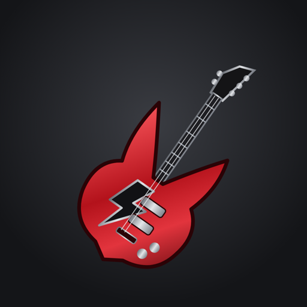

Rock Rank
Greatest acts, ranked by data
Sports fans settle arguments with stats. Now rock fans can too. Rock Rank scores every great rock act on the same seven measures and ranks them, from #1 on down.

What’s inside
The official rankings
Every act scored out of 100 on Sales, Awards & Honors, Longevity, Cultural Impact, Peak, Rock Identity and Musicianship & Songwriting.
Who Sang That?
Type any song or album, from the big hits to the deep cuts, and see who recorded it and where they rank. Over 35,000 songs and 6,700 albums.
Compare artists
Put two or three acts side by side and settle the argument. Who really ranks higher: Bad Company or Foreigner?
Rank artists your way
Change how much each of the seven measures counts and watch the whole list re-rank instantly.
Hall of Fame filters
See who’s in the Rock & Roll Hall of Fame, who isn’t, and the biggest snubs.
4 ways to play
Higher or Lower, Your Own Top Artists, Band Finder and What Would It Take? Plus the Rock Record Book.
Free to explore. Premium to go deeper.
Premium unlocks every artist, all seven score parts, unlimited comparisons and searches, Rank Artists Your Way and every game mode. Subscriptions are billed through the App Store or Google Play and can be cancelled any time.
“I often think in music. I live my daydreams in music. I see my life in terms of music.”
About TGS Studios
TGS Studios (True Grit Studios) builds data-driven apps for music fans. Rock Rank is our first; Pop, R&B, Rap and Country Rank are planned. Questions or a missing artist? Email tgstgs83@gmail.com.